Design to attract, convert and
delight your customers
The structure of the Lewis HTML template:
Home Flash works with ScrollMagic
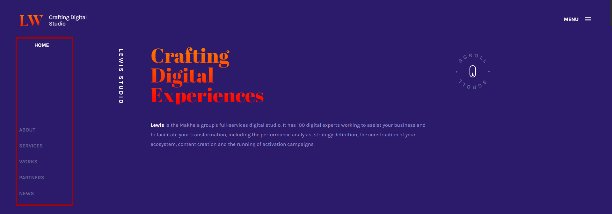
The initial position of the menu items is calculated as follows:
the last element has the top parameter equal to 100% of the window height minus 80px: top: calc(100% - 80px);,
that is, it will be pressed to the bottom of the window with a small indentation.
Each prior element is assigned a top parameter 50px higher than the next: top: calc(100% - 130px); etc.
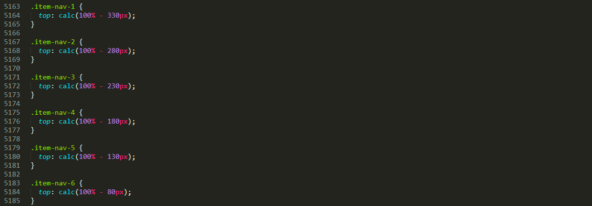
When the page scrolling, the position of the menu items changes, each item in turn becomes active and moves to the top of the window.
The first element is assigned a new value of the parameter top: 130px; (header height plus a low indent after header).
Each next element is given a top parameter 50px more than the previous one: top: 180px; etc.
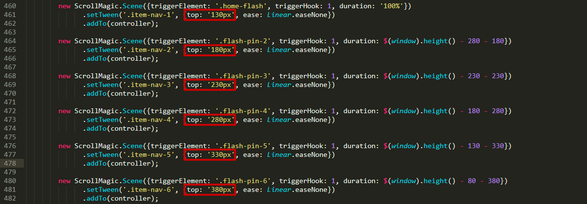
The duration parameter for each menu item is calculated by the formula
Window height - initial item position - final item position
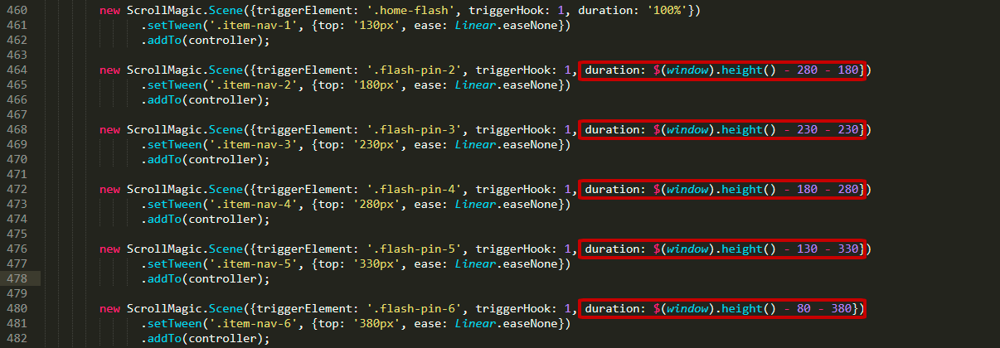
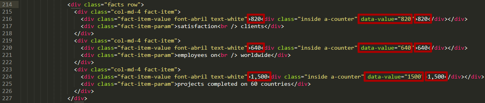
Home parallax piling and parallax horizontal works with jQuery PagePiling plugin
To make white text in section add classes slide-dark
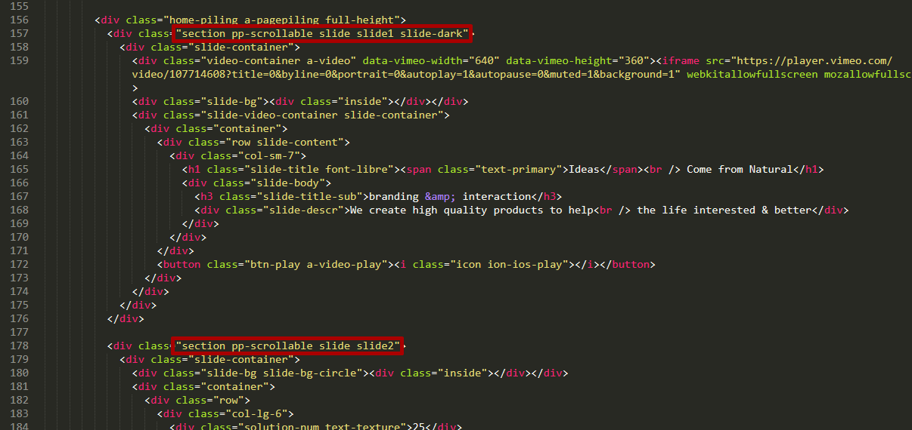
To make white text in header add number of dark slides here:
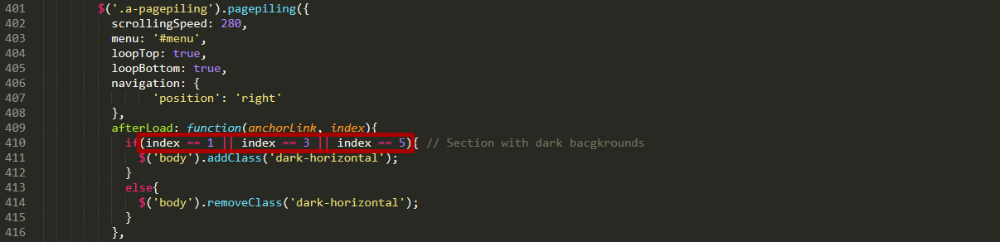
Home Zoom Parallax works with ScrollMagic
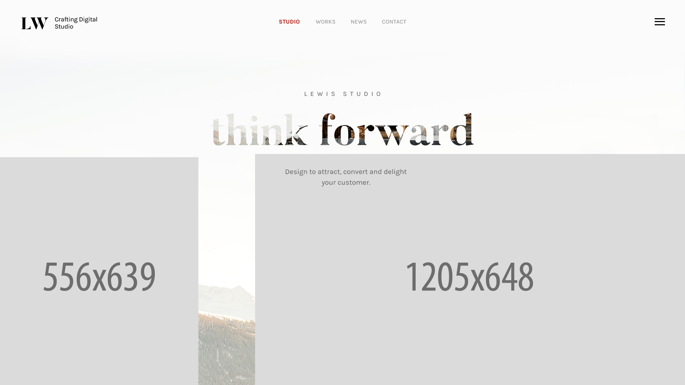
Zoom parallax consists of three images:
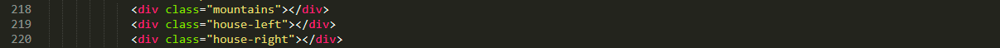
Text animation is created for these classes:
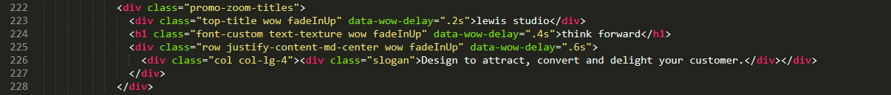
Go to js to change all animation code:
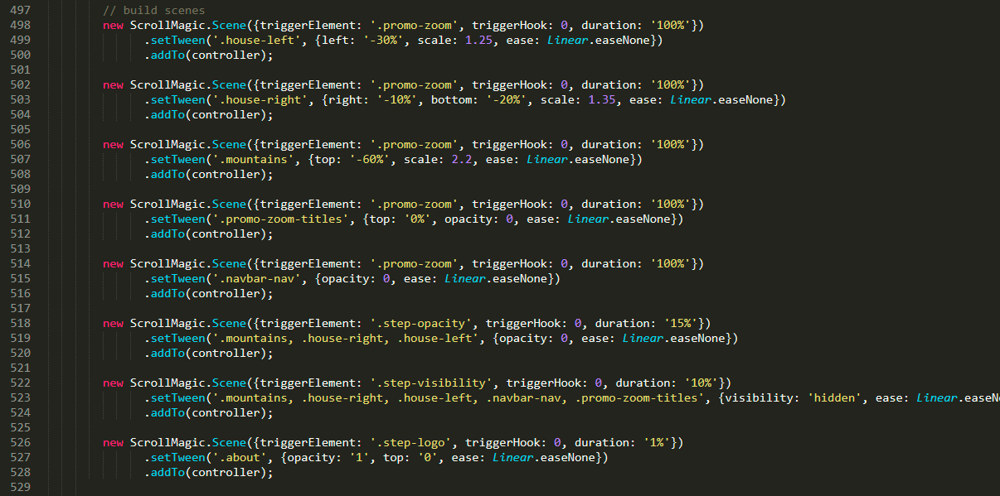
Home 3D Parallax works with ScrollMagic
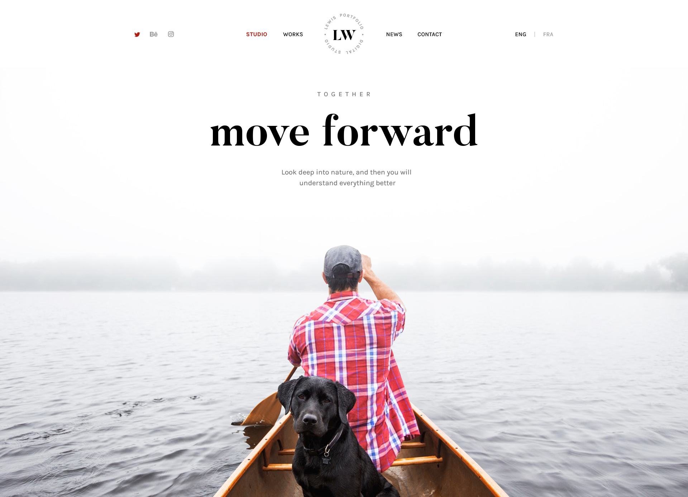
3D parallax consists of two images:
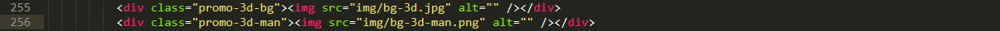
Go to js to change all animation code:
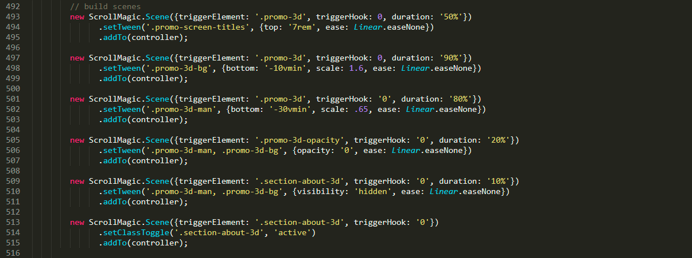
Home Video contains Vimeo video in background
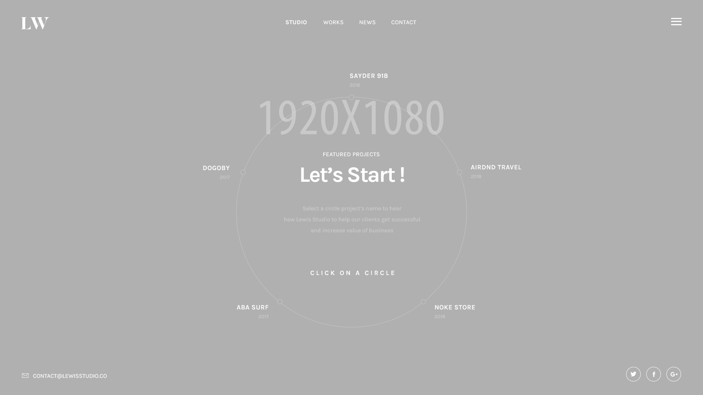
The first item contains the video iframe that is shown by default.
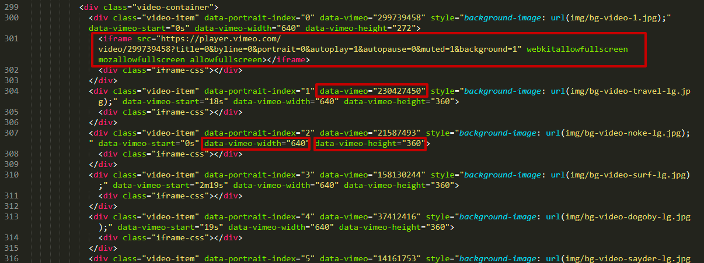
To include each video, you must specify the following parameters:
background-image - desktop background image before video uploading, better if this is the first frame (1920x1080px)
data-vimeo - id video on Vimeo https://vimeo.com/230427450
data-vimeo-width - iframe width
data-vimeo-height - iframe height
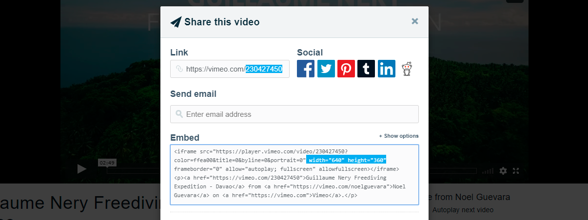
Video-text-container contains titles, descriptions and mobile backgrounds (960x540px)
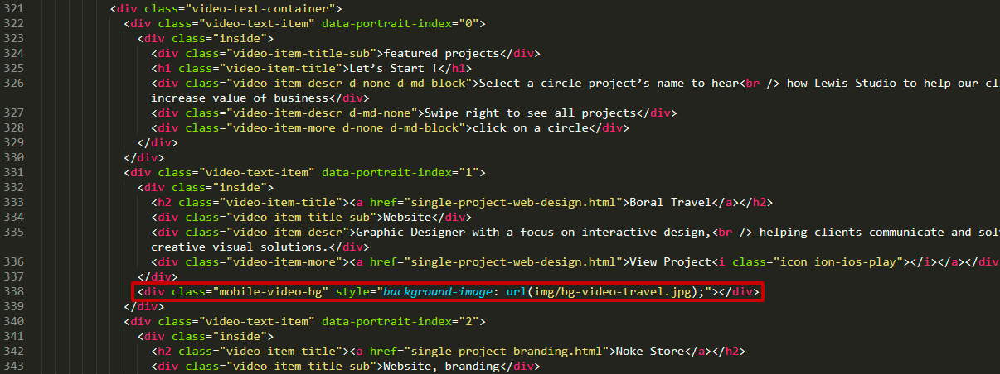
To achieve a hover effect, the contents of elements minimal-item-content are duplicated in promo-minimal and promo-minimal-hover containers
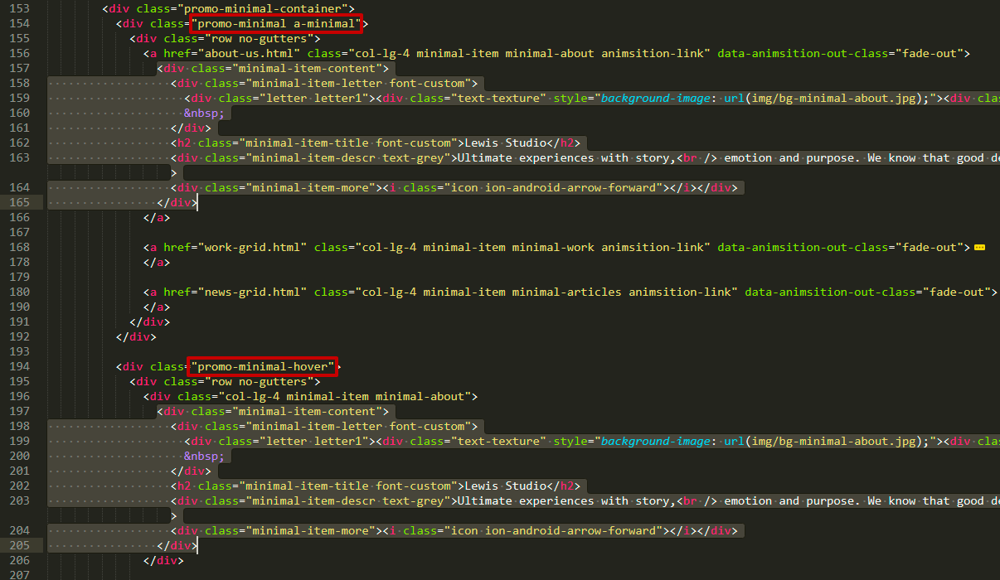
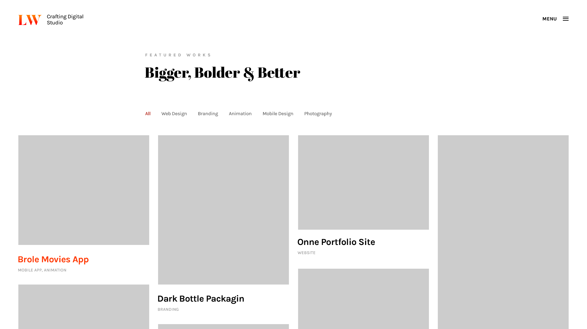
Each filter has a data attribute
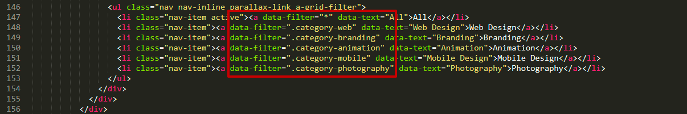
Each item has the same data-filters
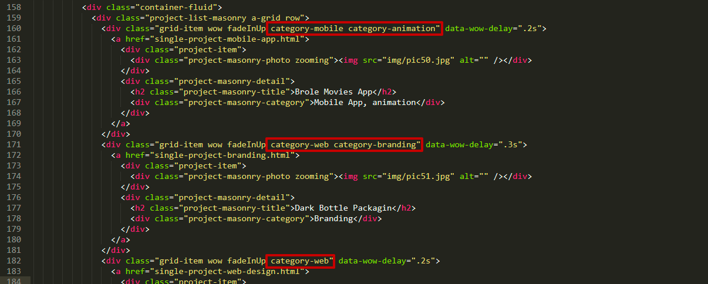